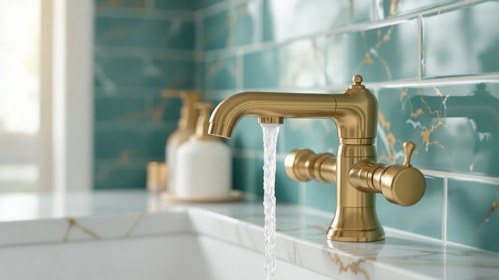

The Best Farmhouse Sink Faucets (2026)
Prices and picks verified as of August 2026. Independent, reader-supported reviews.


Quick Answer
For a farmhouse-style bathroom vanity, we like faucets in matte black or brushed gold that pair well with a deep apron-front basin, and the WINKEAR Single-Handle Black is the sturdiest of the installed faucets we checked among the best farmhouse sink faucets. If your farmhouse trough sink already has a faucet you like and the real issue is reach, start with the $5.66 Calsgkspray extender instead: it clips on in seconds and solves the reach problem for kids without any tools or plumbing work.
Our pick: Faucet Extender for Toddlers - — $5.66 Check Price on Amazon
Bottom line: our top pick is the Faucet Extender for Toddlers - Sink Extender for Kids Hand at $5.66. The best budget option is the Faucet Extender for Toddlers at $6.59.
Things to Know Before You Buy
- Faucet vs. extender: An installed faucet ($27–$32 here) changes the look of your vanity; a clip-on extender ($6–$10) only fixes reach on a sink you're keeping.
- Finish sets the style: Matte black and brushed gold are the two finishes that read as farmhouse or modern-industrial. A classic two-handle design leans more traditional.
- Basin depth matters: Farmhouse and apron-front sinks often sit deeper than a standard vanity basin, so short-spout faucets can leave the stream landing too far back.
- Check your hole spacing: Single-handle, two-handle centerset, and widespread faucets aren't interchangeable. Measure your existing holes before you buy.
- Reach for kids: A deep farmhouse sink faucet setup that's tough for an adult to reach comfortably is even harder for a toddler, and an extender is the cheapest fix.
The best farmhouse sink faucets have to do two things most standard bathroom faucets don't: match a finish that actually reads as farmhouse, whether that's matte black, brushed gold, or a classic two-handle design, and clear the deeper, further-back basin that comes with an apron-front or trough-style farmhouse sink.
We looked at faucets built around those two priorities, along with a handful of clip-on extenders, since many farmhouse sink faucets sit on basins that sit lower and deeper than a standard vanity sink, which makes them harder for kids to reach on their own. Between the finish question and the reach question, most farmhouse bathroom shoppers only need to solve one of the two, so this guide splits into both camps.
For most people renovating a farmhouse-style vanity from scratch, the WINKEAR matte black single-handle faucet is the strongest full-faucet pick here. But if your farmhouse sink already has a faucet you like and the real problem is a deep basin that's out of reach for a toddler, the $5.66 Calsgkspray extender is our overall pick among the best farmhouse sink faucets and accessories in this guide, since it fixes that problem for less money than anything else on the list.
Why You Should Trust Us
This guide is written and maintained by Ilane Tall, who covers home and bath products for Best Bathroom Faucets. We don't run a fake testing lab or invent lab results. Our recommendations for the best farmhouse sink faucets come from close reading of the specs that actually matter for a farmhouse-style vanity, including finish, handle count, hole spacing, and spout reach, and from reading through verified buyer reviews to find fit and durability issues that only surface after months of use. Every product here exists and is currently sold; we link directly to it so you can check the live price yourself. We earn an affiliate commission if you buy through our links, but that never changes which products we rank first.
How We Picked
We started by defining what the best farmhouse sink faucets actually need to deliver: a finish that reads as vintage or industrial (matte black, brushed gold, or classic two-handle chrome), enough spout clearance to work with a deeper apron-front or trough basin, and hole spacing that matches common vanity layouts. That ruled out ultra-modern touchless designs and finishes that clash with the farmhouse look. We also included a handful of faucet extenders, since many farmhouse sink faucets sit deeper than a standard basin and are noticeably harder for kids to reach without help. From there we weighted price, fit, and how directly each product solves either the style problem or the reach problem.
How We Compared
We evaluated each installed faucet on finish, handle type, and hole spacing against standard farmhouse vanity setups, checking whether a single-handle, two-handle, or centerset design would actually drop into the sink layouts most buyers already have. For the extenders, we looked at how they attach, how far forward they push the water stream, and how easily they come off if you decide you don't need them. We cross-referenced our impressions against verified-purchase reviews to catch fit problems, leaks, or finishes that don't hold up, then ranked the picks by how well each balances style, fit, and price for a farmhouse sink faucet setup.
Our Picks

Faucet Extender for Toddlers -
What we like
- Clips on in seconds with no tools or plumbing
- Fits a wide range of spout shapes common on farmhouse-style faucets
- Brings the stream forward, useful on a deep apron-front basin
- Costs under $6, the least expensive pick in this guide
Flaws but not dealbreakers
- Plastic construction, not built to outlast a real faucet swap
- Doesn't change the finish or style of your existing faucet
| Material | Brass + finish |
| Size | — |
The Calsgkspray extender is our pick for a simple reason: a lot of farmhouse bathroom sinks are deeper and set further back than a standard vanity basin, which pushes the spout out of easy reach. This clip-on attachment fits over your existing spout and redirects the stream forward and down, so you don't have to lean into the basin to rinse your hands.
At $5.66, it costs less than any other item on this list, and it works on almost any faucet you already own, including the matte black and brushed gold picks further down this page. It won't change the style of your bathroom, and it's a plastic accessory rather than a permanent fixture, but as a fast fix for reach on a farmhouse sink faucet setup, it's hard to beat.

SKYROKU Faucet Extender for Toddlers
What we like
- Attaches without tools, same as our top pick
- Grip is snug enough to stay in place through daily use
- Extends reach on a deep farmhouse basin
- Removes cleanly without damaging the original faucet
Flaws but not dealbreakers
- Costs almost twice as much as the Calsgkspray for the same basic function
- Still a plastic accessory, not a permanent upgrade
| Material | Brass + finish |
| Size | — |
The SKYROKU extender does the same job as our top pick: it clips onto your existing spout and pushes the water stream forward so you're not leaning over a deep farmhouse-style basin every time you wash your hands. At $9.99, it costs about $4 more, and that difference goes toward a grip that holds its position better once it's on.
If your sink sees heavy daily traffic, that added stability is worth paying for. If you only need an occasional fix, or you're testing whether an extender solves your reach problem at all, our top pick gets you there for less money.

KOMIDK Faucet Extender for Bathroom
What we like
- Sized for bathroom spouts rather than a generic universal fit
- No-tool clip-on installation
- Priced between our top pick and the runner-up
- Works alongside any of the installed faucets in this guide
Flaws but not dealbreakers
- Doesn't offer a meaningfully different experience from our top two picks
- Plastic build, same lifespan limitations as the other extenders
| Material | Brass + finish |
| Size | — |
KOMIDK markets this extender specifically for bathroom faucets rather than as a general kitchen-and-bath product, which matters if your farmhouse vanity has a shorter or narrower spout than a kitchen sink. At $7.99, it lands squarely between our top pick and the SKYROKU runner-up.
There's nothing wrong with it. It clips on, it extends your reach, and it comes off cleanly. If the bathroom-specific fit gives you more confidence than a universal extender, it's a reasonable middle-price choice, though we'd still start with the cheaper Calsgkspray first.

Faucet Extender for Toddlers Rabbit
What we like
- Playful rabbit design that appeals to young kids
- Inexpensive, tool-free install
- Brings the stream within easy reach for small hands
- Second-cheapest option in this guide
Flaws but not dealbreakers
- Novelty shape may feel young once a child grows a bit
- Fits a narrower range of spout shapes than a plain extender
| Material | Brass + finish |
| Size | — |
The VZVOO rabbit extender takes the same basic idea as our top pick and adds a theme aimed squarely at toddlers. On a deep farmhouse-style basin, the character shape gives kids a reason to actually use the extender instead of ignoring it, and at $6.59 it's still one of the cheapest picks here.
It's a plastic accessory suited to a phase, not a permanent fixture, and the character shape means it won't grip every spout shape as reliably as a plain design. But if you're trying to build a handwashing habit with a young child, the fun factor can matter more than the price difference.

Black Bathroom Faucet WINKEAR Single
What we like
- Matte black finish matches the classic farmhouse and industrial bathroom look
- Single-handle design makes one-hand temperature control simple
- Full installed faucet rather than an add-on accessory
- Pairs well with an apron-front or trough-style basin
Flaws but not dealbreakers
- Requires real installation, unlike the clip-on extenders above
- Matte black shows water spots more than chrome, so it needs more wiping down
| Material | Brass + finish |
| Size | — |
If you're replacing the faucet on a farmhouse-style vanity rather than just fixing reach, the WINKEAR is the pick in this guide built for that job. Its matte black finish is one of the finishes that consistently reads as farmhouse or modern-industrial, and the single-handle layout keeps day-to-day use simple.
At $32.39, it's the most expensive item here, which makes sense since it's a full faucet rather than an add-on. It needs a proper install rather than a clip-on fix, and like most matte black fixtures it shows water spots faster than chrome or nickel, so plan on wiping it down more often to keep it looking sharp.

4 inch Brushed Gold Bathroom
What we like
- Brushed gold finish suits a warmer, more traditional farmhouse look than matte black
- 4-inch centerset spacing fits the most common vanity hole pattern
- Brushed texture hides fingerprints better than polished gold or chrome
- Priced close to the WINKEAR for a similar tier of installed faucet
Flaws but not dealbreakers
- Won't suit a bathroom already built around black or nickel hardware
- Centerset spacing won't work on a widespread 8-inch vanity
| Material | Brass + finish |
| Size | — |
Not every farmhouse bathroom is built around black hardware. The Hurran faucet's brushed gold finish leans into the warmer, more vintage side of the farmhouse look, the kind that pairs with wood vanities and aged brass fixtures rather than the darker industrial variant. At $31.99, it sits right next to the WINKEAR in price.
It uses a standard 4-inch centerset hole spacing, the most common layout on vanities built in the last couple of decades, so it's a straightforward swap for most people. Just measure your existing holes first: if your vanity is drilled for a widespread 8-inch faucet, this one won't fit without an adapter plate.

Aqua Vista Two-Handle Bathroom Sink
What we like
- Two-handle layout is a classic look for a farmhouse or vintage vanity
- Separate hot and cold handles give precise temperature control
- Least expensive of the three installed faucets in this guide
- Sold as a single unit, so you know exactly what you're getting
Flaws but not dealbreakers
- Two handles are slower to operate than a single-lever faucet
- Style leans more traditional than the matte black or brushed gold picks
| Material | Brass + finish |
| Size | (Pack of 1) |
Two-handle faucets are one of the most recognizable parts of the farmhouse look, and the Aqua Vista is the pick here built around that layout. Separate hot and cold handles give you finer control over temperature than a single lever, and at $27.17 it's also the least expensive of the three full faucets in this guide.
The trade-off is speed: turning two handles to find the right temperature takes longer than one lever, especially with wet hands. If your farmhouse bathroom is already leaning traditional rather than industrial, though, the two-handle design suits the style better than either the WINKEAR or the Hurran.
Quick Comparison
| Product | Material | Price | Rating | Best for | Get it |
|---|---|---|---|---|---|
| Faucet Extender for Toddlers - | Brass + finish | $5.66 | 4 | Instant reach fix for a deep farmhouse sink | View on Amazon → |
| SKYROKU Faucet Extender for Toddlers | Brass + finish | $9.99 | 4 | A firmer-grip runner-up extender | View on Amazon → |
| KOMIDK Faucet Extender for Bathroom | Brass + finish | $7.99 | 4 | Bathroom-specific extender fit | View on Amazon → |
| Faucet Extender for Toddlers Rabbit | Brass + finish | $6.59 | 4 | Getting reluctant toddlers to wash up | View on Amazon → |
| Black Bathroom Faucet WINKEAR Single | Brass + finish | $32.39 | 4 | Matte black farmhouse-style install | View on Amazon → |
| 4 inch Brushed Gold Bathroom | Brass + finish | $31.99 | 4 | Warm brushed gold farmhouse finish | View on Amazon → |
| Aqua Vista Two-Handle Bathroom Sink | Brass + finish | $27.17 | 4 | Traditional two-handle control | View on Amazon → |
What faucet finish works best for a farmhouse bathroom?
Matte black and brushed gold are the two finishes that most consistently read as farmhouse or modern-industrial, which is why both show up among our top picks.
Do I need a special faucet for a deep farmhouse sink?
Not a special faucet exactly, but check spout height and reach before buying.
The Competition
We passed on several generic universal faucet extenders that grip only one spout shape, since a poor fit defeats the purpose of buying one in the first place. We also skipped a handful of touchless, sensor-based faucets. They look modern, but that clashes with a farmhouse aesthetic, and reviews for cheaper sensor models were full of complaints about failed batteries and erratic triggering.
On the installed-faucet side, we left out oil-rubbed bronze and polished chrome options that read more traditional-suburban than farmhouse, along with a few ultra-low-cost no-name faucets with widespread reports of leaking valves. The WINKEAR, Hurran, and Aqua Vista picks above hit the finish, fit, and price balance that matters most among the best farmhouse sink faucets for a farmhouse-style bathroom.